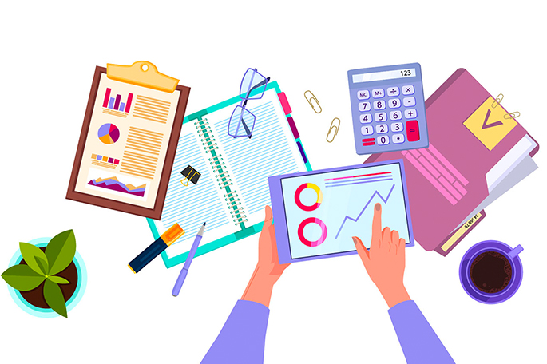
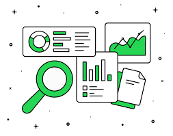

En la era digital, la creación de contenido multimedia se ha convertido en una actividad fundamental en diversos
ámbitos, desde la educación hasta el entretenimiento y la comunicación empresarial. Las herramientas de autoría
multimedia permiten a los creadores diseñar, editar y distribuir contenidos en diferentes formatos, como imágenes,
videos, audios y animaciones. Estas aplicaciones han revolucionado la manera en que se produce y consume la información,
facilitando la generación de contenido personalizado e interactivo. En este ensayo, se analizarán los principales
tipos de aplicaciones multimedia en la autoría, sus beneficios y los desafíos que presentan.
Las herramientas de autoría multimedia permiten a los creadores desarrollar contenidos interactivos y personalizados
sin necesidad de conocimientos avanzados en programación. Estas aplicaciones son utilizadas para diseñar cursos en línea,
materiales educativos y presentaciones interactivas, facilitando la creación y distribución de contenido de alta calidad.
Uno de los tipos más destacados de aplicaciones multimedia en la autoría es el software de edición de audio y video. Herramientas como Adobe Premiere Pro, Final Cut Pro y Audacity permiten la creación de contenido audiovisual de alta calidad, facilitando la edición, el montaje y la postproducción. Estos programas han sido esenciales para la industria del cine, la televisión y la producción de contenido para plataformas digitales como YouTube y TikTok. Además, han permitido a creadores independientes desarrollar proyectos sin necesidad de grandes inversiones en equipamiento profesional.

Otro tipo de aplicaciones multimedia en la autoría es el software de diseño y animación. Programas como Adobe Photoshop, Illustrator y Blender brindan herramientas para la creación de gráficos, ilustraciones y animaciones en 2D y 3D. Estos recursos son ampliamente utilizados en diseño gráfico, publicidad, videojuegos y producción cinematográfica. La animación digital, en particular, ha cobrado gran relevancia en la industria del entretenimiento, permitiendo la creación de efectos visuales y personajes realistas.

En el ámbito de la publicación digital, las aplicaciones de autoría han transformado la manera
en que se crean y distribuyen los contenidos escritos. Herramientas como Microsoft Publisher,
Adobe InDesign y Canva facilitan el diseño de libros, revistas, folletos y otros materiales
impresos y digitales. Además, las plataformas de autoedición, como Kindle Direct Publishing y
Wattpad, han democratizado el acceso a la publicación, permitiendo que autores independientes
compartan sus obras sin necesidad de intermediarios editoriales.
Por otro lado, la creación de contenido interactivo ha sido impulsada por herramientas de
autoría como Articulate Storyline, Adobe Captivate y Genially. Estas aplicaciones permiten
diseñar experiencias de aprendizaje en línea, juegos educativos y presentaciones interactivas
que combinan texto, imágenes, videos y cuestionarios. Su aplicación es clave en el sector
educativo y corporativo, facilitando la capacitación de empleados y la enseñanza a distancia.
A pesar de sus numerosos beneficios, la utilización de aplicaciones multimedia en la autoría enfrenta diversos desafíos. La curva de aprendizaje de algunos programas puede ser compleja, requiriendo capacitación especializada para su dominio. Además, el costo de licencias de software profesional puede ser una barrera para creadores independientes y pequeñas empresas. Asimismo, la saturación de contenido digital hace que destacar en plataformas en línea sea cada vez más desafiante, obligando a los creadores a innovar constantemente en sus producciones.